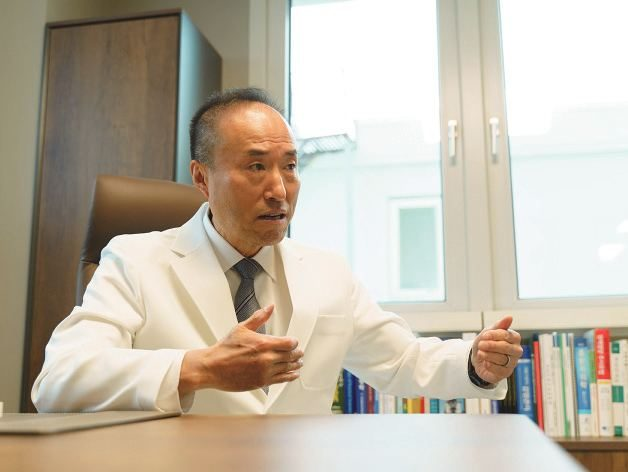

유방암, 두렵고 막막한 여정...
유방암 선항암부터 항호르몬·표적항암 치료까지, 단계마다 무엇을 관리하나요?
유방암 환자분은 선항암, 수술, 후항암, 방사선, 항호르몬·표적항암 치료 가운데 필요한 단계를 거치십니다. 하일렌요양병원은 어느 단계든 주치의가 진료한 후 몸 상태와 대학병원·암병원 일정에 맞춰 치료를 정합니다. 수술받으신 병원 일정에 맞춰 치료를 진행합니다. 처음 유방암 진단을 받았을 때, 누구나 두렵고 막막합니다. 앞으로 어떤 일이 펼쳐질지, 수술과 항암, 방사선 과정까지 모두 걱정이 앞섭니다. 전남광주 하일렌요양병원은 선항암부터 항호르몬·표적항암 치료까지 치료 단계마다 회복을 돕습니다. 수술 부위 관리, 주사, 식사, 운동, 정서관리까지 모든 회복 과정이 자연스럽게 연결되는 공간입니다.

- 대상
- 유방암 선항암, 수술 후, 항암 중, 방사선 치료 중과 후, 항호르몬·표적항암 치료 시기에 회복이 필요한 분
- 입원 사유
- 항암 부작용과 면역 저하 상태 관리
- 이용 방법
- 입원 · 단기입원(금·토·일 주말, 1박 2일부터) · 외래(주 1~5회)
- 유방암 진료
- 이정경 원장 · 남성 유방암은 장익완 병원장
- 입원 서류
- 소견서 또는 진료기록지 중 하나, 신분증, 피검사 결과지
- 문의
- 원내 상담실 · 카카오톡 채널 · 062-439-1000
유방암 치료는 어떤 순서로 이어지나요
단계마다 주치의와 상의하여 치료를 진행합니다.
- 선항암 — 수술 전에 항암을 먼저 받는 시기입니다. 항암 회차에 맞춰 입원과 외래 진료를 나눠 수술까지 몸 상태를 살핍니다.
- 수술 — 부분절제, 전절제, 재건 수술을 받는 시기입니다.
- 후항암 — 회차마다 부작용과 면역 저하 상태를 입원이나 외래 진료로 관리합니다.
- 방사선 — 몇 주에 걸쳐 대학병원·암병원에 다니며 받는 시기입니다. 이 기간에 고압산소치료를 함께 받으실 수 있습니다.
- 항호르몬·표적항암 — 정기검사까지 오래 이어지는 관리의 시기입니다.
다섯 단계를 모두 거치시는 것은 아닙니다. 병기와 유방암의 종류(아형)에 따른 치료 기준은 한국유방암학회 「한국 유방암 진료권고안」(제11차, 2025)에 있습니다.
어느 단계든 주치의가 진료한 후 몸 상태와 대학병원·암병원 일정에 맞춰 치료를 정합니다. 퇴원하실 때마다 다음 회차에 맞춘 입원 예약과 외래 요일을 함께 잡습니다.
유방암 진료

이춘기 자문의
종양내과 자문의
- 미국 아이오와 대학병원 종양내과 전임의
- 미국 미시간 대학병원 종양내과 교수
- 미국 밴더빌트 의과대학 종양학 초청교수

이정경 원장
- 전남대학교 의과대학 졸업
- 광주보훈병원 인턴, 레지던트 수료
- 호스피스 완화의료 수료
- 가정의학과 전문의 취득
- 광주보훈병원 응급의학과 호스피스 진료부장 역임
남성 유방암 환자분의 진료는 장익완 병원장이 맡습니다. 의료진 약력은 의료진 소개에서 보실 수 있습니다.
이용 방법 — 항암 회차에 맞춰 입원과 외래를 나눕니다
- 입원 — 항암 일정에 맞춰 입원과 퇴원을 되풀이하실 수 있습니다.
- 단기입원 — 항암 주기 사이, 직장을 쉬지 않고 금·토·일 주말에 1박 2일부터 입원하실 수 있습니다.
- 외래 진료 — 주 1~5회, 퇴근 후 저녁 시간도 가능합니다. 방사선 치료 기간에는 외래 진료와 입원 모두 이용하실 수 있습니다.
대학병원·암병원의 항암·방사선 일정표를 가져오시면 다음 회차 입원일을 함께 정해 드립니다. 선항암 기간의 입원은 몇 달치를 한 번에 정하지 않고 항암 회차에 맞춰 입원과 외래를 나눕니다.
유방암 수술 후 조직검사 결과가 나오기 전에 입원하실 때는 입원 기간을 한 번에 정하기 어렵습니다. 먼저 결과를 듣는 외래 날까지로 기간을 원내 상담실과 맞춰 두고, 결과를 들으신 후에는 그때의 몸 상태와 이어질 치료 일정을 보고 주치의와 다시 정합니다.
단기입원과 외래 진료의 자세한 내용은 단기입원·외래 안내에 있습니다.
수술 부위와 림프 관리
첫 외래 진료 전후로 팔과 수술 부위를 이어서 살핍니다.
- 수술 부위
- 수술받으신 병원의 지침 그대로 이어서 살핍니다. 소독이 필요하면 그 주기대로 받으실 수 있습니다.
- 배액관
- 배액관(피주머니)을 단 채로 입원하실 수 있습니다.
- 팔 붓기
- 림프절 수술을 받으신 분은 양쪽 팔의 같은 위치를 줄자로 재어 붓기를 비교합니다.
- 주사·상처관리 전담팀의 수술 부위·배액관(피주머니) 관리
- 수술 후 통증 조절
- 림프 부종 관리 및 치료(림프 순환 저출력 레이저)
- 초음파로 부위 확인
- 공기 압박 치료
- 림프·도수치료
주사·상처관리 전담팀의 수술 부위 관리, 림프 부종 관리 및 치료, 초음파로 부위 확인은 하일렌요양병원이 특히 힘을 쏟는 부분입니다. 치료 항목과 횟수는 주치의가 진료한 후 정합니다.
입원 중에는 물이 고인 자리와 배액관을 뺀 자리를 주사·상처관리 전담팀이 주기적으로 살피고, 달라진 점은 의사가 확인합니다. 수술 자리에 고인 물을 뺄지는 수술받으신 병원 외래에서 담당의가 정합니다.
림프부종(팔 붓기) 관리는 치료 시기와 관계없이 꾸준히 이어 갑니다. 저출력 레이저 치료를 함께 받으실지는 주치의가 진료한 후 정합니다.

수술 부위 회복 '주사·상처관리 전담팀'
"상처가 덧나면 어쩌죠? 붓기도 걱정돼요" "상처가 아물지 않으면 어떡하죠? 붓기도 불안해요"
주사·상처관리 전담팀이 상처 회복, 림프부종(팔 붓기), 피부 트러블, 통증을 관리합니다.
회복 프로그램
림프부종·상지 회복 프로그램
암재활 운동치료와 림프부종 치료로 팔 통증, 부종, 자세 불균형을 관리합니다.
"움직이면 더 나빠질까 봐 무서워요"
움직이기가 겁나실 수 있습니다. 어깨·팔 도수치료와 재활 운동, 암재활 운동치료를 주치의 진료에 따라 받으실 수 있습니다. 어디까지 움직여도 되는지는 주치의가 몸 상태를 살피고 환자분과 이야기를 나눈 후 함께 정합니다. 암재활 운동치료에는 걷기 운동 프로그램이 따로 없습니다.
어느 단계든 · 면역 · 온열 치료
치료 단계와 관계없이 받으실 수 있는 면역·온열 치료입니다. 어떤 치료를 받으실지는 몸 상태에 따라 주치의가 진료한 후 정합니다.
- 면역 주사(싸이모신알파1 · 미슬토)
- 통증 치료(비침습적 무통증 신호요법)
- 고주파온열암치료
- 전신온열치료
- 고압산소치료
- 고용량 비타민C
- 고용량 셀레나제
전신온열치료는 고주파온열암치료 전에 몸 전체에 열을 가해 체온을 높이는 치료입니다. 치료실은 치료실 안내에서 보실 수 있습니다.
항암 · 방사선 시기의 치료
주사를 맞으신 후의 힘든 기간과 방사선 치료 기간을 곁에서 함께합니다.
- 주사·상처관리 전담팀의 주사·수액
- 맞춤 항암식(끼니마다 환자분에 맞춰 조정)
- 영양컨시어지의 식사 돌봄 — 식사 자리에서 살피고 드실 수 있는 음식을 함께 찾습니다
- 케모포트 · 팔의 혈관으로 넣는 관(PICC) · 히크만 카테터 관리
- 항암 부작용 관리(발열·설사·구토·손발저림)
- 방사선 피부 관리
주사·상처관리 전담팀의 주사·수액과 맞춤 항암식은 하일렌요양병원이 특히 힘을 쏟는 부분입니다.
이 시기에는 항암 부작용과 면역 저하 상태를 관리하기 위해 입원하십니다. 혈액검사와 흉부 엑스레이 촬영은 원내에서 하고, 그날 바로 주치의가 결과를 확인합니다.
입원 중 원내 혈액검사에서 호중구 수치가 낮게 나오면 주치의가 필요에 따라 과립구집락인자 생성 촉진제를 처방하고, 다음 항암을 미룰지는 대학병원·암병원의 담당의가 정합니다.
다음 입원 날짜는 대학병원·암병원 일정표와 몸 상태에 따라 원내 상담실이 함께 정해 드립니다. 입원 중에도 대학병원·암병원 외래는 그대로 다니실 수 있습니다. 야간 대응은 입원 안내에서 보실 수 있습니다.
정맥주사 — 주사·상처관리 전담팀
"주사 맞는 것도 너무 스트레스예요"
주사 맞는 일이 거듭되면 지치실 만합니다. 주사·상처관리 전담팀이 주사, 항암 후 수액, 면역주사까지 꼼꼼히 살펴 드립니다. 입원 중 케모포트로 들어가는 수액과 약물 투여, 소독, 바늘 관리는 대학병원·암병원 지침 그대로 원내 의료진과 주사·상처관리 전담팀이 살펴 드립니다. 팔의 혈관으로 넣는 관(PICC)이나 히크만 카테터가 있는 분의 관리 범위는 원내 상담실에서 안내해 드립니다.
"토할 것 같고 머리카락도 빠져요"
오심, 구토, 탈모, 피로, 손발저림, 신경병증까지 수액, 영양식, 회복 운동, 온열 요법으로 몸의 회복을 돕습니다. 그래도 나아지지 않으면 의료진이 살펴보고, 필요하면 대학병원·암병원 진료를 안내해 드립니다.
"피부가 따갑고 너무 피곤해요"
피부 트러블, 열감, 피로, 면역 저하를 피부 관리, 영양 보강, 휴식 프로그램으로 살피며 회복을 돕습니다. 입원 중에는 방사선 치료 부위의 피부 상태를 확인하고, 피부 반응이 생기면 주치의가 진료해 처방합니다. 방사선 치료 기간에는 외래 진료와 입원 모두 이용하실 수 있고, 치료 중간에 바꾸셔도 됩니다. 방사선 피부 반응의 진료 지침은 치료실 안내의 분야별 진료 지침과 관리에서 보실 수 있습니다.
부작용 관리와 회복 일과
"몸이 너무 피곤하고 아파요"
오심, 피로, 신경통, 관절통 같은 여러 부작용을 식사, 운동, 온열, 정서 회복까지 함께 관리해 몸과 마음의 회복을 돕습니다. 통증은 면역 및 통증 치료실에서 통증·자율신경 주사치료로 관리합니다.
재활 · 식이 · 일상 복귀 준비
치료 사이의 회복과 일상 복귀를 돕고, 대학병원·암병원 일정에 맞춰 움직입니다.
- 어깨·팔 도수치료
- 암재활 운동치료
- 맞춤 회복식
- 항호르몬·표적항암 치료 부작용 관리
- 정기 검사 일정 관리 · 힘드실 때 단기입원
항호르몬·표적항암 치료 시기에는 약 부작용 관리와 정기 검사 일정을 함께 챙기고, 힘들 때는 단기입원을 이용하실 수 있습니다. 어떤 치료를 받으실지는 주치의가 진료에서 정합니다.
표준 치료를 마친 후에는 떨어진 체력과 신체 기능의 회복을 돕습니다. 입원하지 않으셔도 외래 진료로 고주파온열암치료·고압산소치료·도수치료·림프 관리·고용량 비타민C·면역 주사제·영양공급수액을 받으실 수 있습니다. 대학병원·암병원 이동 안내는 오시는 길·면회 안내에서 확인하실 수 있습니다.
영양컨시어지 제도
내 몸에 꼭 맞는 식사
"입맛 없어서 못 먹겠어요" "위장약 먹는데 식사는 어떻게 하죠?"
입맛이 없으면 한 끼도 버거우실 겁니다. 저염·저지방 식단으로 항암 시기의 영양을 채우고, 소화불량에 맞춰 식사를 조정하며, 식사 고민까지 영양컨시어지가 살핍니다. 입원 중 식사는 주치의가 환자분 상태에 맞춰 처방하고, 치료식(일반식 · 항암식 · 위절제식 · 저잔사식 · 저염식 · 저요오드식 등) 가운데에서 고릅니다. 영양컨시어지가 드신 양과 드신 후 불편한 점을 주기적으로 확인해 기록하고, 주치의가 그 기록을 보고 식사를 처방합니다.

마음 회복 · 힐링 프로그램
정서 회복을 함께 돕습니다.
명상(김성훈 수석병원장 진행), 요가, 라인댄스, 캘리그라피, 뜨개공방, 매듭공예, 천연화장품공방, 차 다도, 암기공(매달 강의), 주말영화, 편백숲 트레킹이 있습니다. 입원하지 않으셔도 외래 진료로 오셔서 참여하실 수 있습니다. 월별 일정은 프로그램 안내와 소식에서 알려 드립니다.
수술 후 요가·라인댄스 시작 시기는 주치의 진단에 따라 환자분마다 달라질 수 있습니다.
"불안해서 잠도 못 자요...외모도 달라졌어요"
잠 못 드는 밤과 달라진 모습 때문에 마음이 많이 힘드실 겁니다. 명상, 힐링 클래스, 소통 프로그램으로 마음의 회복과 심리적 안정을 돕습니다.
힐링 프로그램
회복과 마음을 채우는 힐링 프로그램
"마음이 너무 지치고 우울해요"
"나를 돌보는 시간"으로 감정과 몸의 회복을 돕습니다.

입원 생활
생활까지 배려한 병원 환경
쾌적한 병실 환경
병실은 VIP실, 특실, 1인실, 2인실, 4인실 다섯 종류이고, 그 가운데 1인실을 다수 운영하고 있습니다.
- 모든 병실에 샤워실, 화장실, 냉장고, 옷장이 따로 있습니다
하일렌요양병원은 1인실 위주로 구성되어 있습니다. 바깥과의 접촉을 줄이기 위해 되도록 1인실을 쓰시도록 하고 있습니다.
사계절 쾌적한 공기와 온도
- 바닥 난방이라 겨울에도 따뜻합니다
- 병실마다 온도를 따로 맞추실 수 있는 에어컨과 히터가 있습니다
- 공기청정 시스템으로 공기를 쾌적하게 관리합니다
일상 복귀 돌봄
수술 후부터 회복까지, 계속 함께합니다.
- 단기입원(1박 2일부터), 외래, 주사를 일정과 상황에 맞춰 고르실 수 있습니다
- 진료와 주사 후에는 쉼터 공간을 이용하실 수 있습니다
- 치료가 끝난 후에도 건강한 일상으로 돌아가시는 길까지 함께합니다
최신 신약 정보와 관리 안내도 종양내과 자문의 협진으로 함께합니다.
면회 기준은 오시는 길·면회 안내에서 확인하실 수 있습니다. 입원 서류와 첫날 절차는 입원 안내에 있습니다.
안심 픽업과 오시는 길
퇴원하시는 날 수술받으신 병원에서 하일렌요양병원까지 안심 픽업 서비스를 이용하실 수 있습니다. 입원 중 수술병원에 다녀오실 때도 이용하실 수 있습니다. 전남광주 시내 대학병원에서 차량으로 약 10분, 화순에서 약 30분입니다.
서울(용산역 KTX · 수서역 SRT)에서 오시면 광주송정역에서 안심 픽업을 이용하실 수 있고, 하일렌요양병원까지 차량으로 약 20분입니다. 열차 시각을 원내 상담실에 미리 알려 주세요.
전남광주통합특별시 서구 상무대로 1176 · 지하철 1호선 농성역 1번 출구에서 걸어서 약 8분입니다. 자세한 길은 오시는 길·면회 안내에서 확인하실 수 있습니다.
편하게 상담을 신청해 주세요
하일렌요양병원 유방암 회복 프로그램
수술부터 회복, 일상 복귀까지 함께합니다
수술 날짜나 항암·방사선 일정이 정해지면 먼저 연락해 주세요. 입원일과 병실을 함께 정합니다.
카카오톡 채널 또는 전화(062-439-1000)로 1:1 상담을 받으실 수 있습니다. 주말과 평일 20시 이후 카카오톡 채널 문의는 다음 날 답변합니다.
외래 진료 접수는 월~금 09:00~17:30(점심 12:30~13:30), 토 09:00~12:00이고 일요일·공휴일은 쉽니다.
자주 묻는 질문
어떤 병원을 선택해야 할까요?
병원을 고르실 때 고민이 많으실 겁니다. 하일렌요양병원은 암 치료 사이의 회복을 돕는 전남광주 서구의 암요양병원입니다. 암 치료는 지금 다니시는 대학병원·암병원에서 그대로 이어 가십니다. 입원이 맞는지는 원내 상담실에서 함께 정합니다.
수술받으신 병원에서 퇴원하는 날 바로 입원할 수 있나요?
수술 날짜가 정해지면 예상 퇴원 날짜와 수술 방법을 원내 상담실에 미리 알려 주세요. 입원 날짜는 원내 상담실에서 안내해 드립니다. 입원 후에는 수술 부위와 배액관을 수술받으신 병원의 지침 그대로 주사·상처관리 전담팀이 이어서 살펴 드립니다. 퇴원 날짜가 바뀌면 바로 알려 주세요.
배액관을 달고 있는데 입원할 수 있나요?
배액관을 단 채로 입원하실 수 있습니다. 입원 중에는 주사·상처관리 전담팀이 수술받으신 병원의 지침대로 수술 부위와 배액관을 이어서 살피고, 상태는 사진과 함께 보고해 의사가 확인합니다. 수술받으신 병원에서 받으신 상처와 배액관 관리 안내는 종이로 받으셨으면 그대로, 말로 들으셨으면 적어서 가져와 주세요. 대학병원·암병원 진료가 필요하다고 보이면 안내해 드립니다. 배액관을 언제 뺄지는 수술받으신 병원 외래에서 배액량과 색, 수술 부위 상태를 보고 정합니다.
수술 부위 소독은 해 주나요?
수술 부위는 수술받으신 병원의 지침 그대로 주사·상처관리 전담팀이 이어서 살펴 드립니다. 소독이 필요하다는 지침이면 그 주기대로 하일렌요양병원에서 받으실 수 있습니다.
항암 주사를 맞은 날 바로 입원할 수 있나요?
항암 일정에 맞춰 입원과 퇴원을 되풀이하실 수 있습니다. 대학병원·암병원에서 받으신 일정표를 원내 상담실에 알려 주시면 입원 날짜를 함께 잡아 드립니다. 항암 주사를 맞고 오신 날에는 가져오신 약을 병동 간호사가 먼저 기록합니다. 도착한 후의 처방은 주치의가 진료에서 정합니다. 저녁 늦게 도착하시는 날의 입원 접수는 원내 상담실에 미리 확인해 주세요.
부작용은 어떻게 관리해야 하나요?
항암·방사선 치료 중에는 발열·오심·피로 같은 부작용 증상을 살피고 관리합니다. 관리하는 동안에도 증상이 나아지지 않거나 오히려 나빠질 때가 있습니다. 그럴 때는 의료진이 살펴보고, 대학병원·암병원 진료가 필요하다고 보면 안내해 드립니다. 야간 대응은 입원 안내에서 보실 수 있습니다.
케모포트나 팔의 혈관으로 넣는 관(PICC)이 있어도 입원할 수 있나요?
입원 중 케모포트로 들어가는 수액과 약물 투여, 소독, 바늘 관리는 대학병원·암병원 지침 그대로 원내 의료진과 주사·상처관리 전담팀이 살펴 드립니다. 케모포트로 항암제를 맞으시는 중에 입원하시면 케모포트 관리와 제거도 대학병원·암병원 지침에 따라 해 드립니다. 팔의 혈관으로 넣는 관(PICC)이나 히크만 카테터가 있는 분의 관리 범위는 원내 상담실에서 안내해 드립니다. 입원하실 수 있는지는 상담 때 상태를 듣고 말씀드립니다.
방사선 치료 기간에는 외래 진료와 입원 중 무엇이 맞나요?
집에서 외래 진료로 회복치료를 받으실 수도, 입원해 지내며 대학병원·암병원을 다녀오실 수도 있습니다. 치료 중간에 바꾸셔도 됩니다. 입원으로 바꾸고 싶으시면 남은 방사선 치료 일정을 원내 상담실에 알려 주세요. 여러 날 이어서 대학병원·암병원에 다니실 때 필요한 서류와 이동은 원내 상담실에서 안내해 드립니다.
항호르몬제를 먹는 동안에도 이용할 수 있나요?
항호르몬제 처방은 지금 다니시는 대학병원·암병원에서 받으십니다. 항호르몬 치료 시기에는 약 부작용 관리와 정기 검사 일정을 함께 챙기고, 힘들 때는 단기입원을 이용하실 수 있습니다. 도수치료와 통증 치료 가운데 무엇을 받으실지는 주치의가 진료에서 정합니다. 약을 바꾸거나 쉬는 판단은 대학병원·암병원 담당의가 합니다.
직장을 쉬지 않고 치료받을 수 있나요?
외래 진료는 주 1~5회이고, 퇴근 후 저녁 시간도 가능합니다. 항암 주기 사이에는 직장을 쉬지 않고 금·토·일 주말에 1박 2일부터 단기입원하실 수 있습니다.
남성 유방암도 진료받을 수 있나요?
네, 진료받으실 수 있습니다. 남성 유방암 환자분의 진료는 장익완 병원장이 맡습니다.
입원 기간이 짧게 정해져 있어도 되나요?
네, 상담에서 기간과 그 사정, 대학병원·암병원에서 들은 주의 사항을 알려 주세요. 원내 상담실이 들은 내용을 그대로 주치의에게 전하고, 주치의가 그 기간에 맞춰 치료를 짭니다. 대학병원·암병원의 항암·방사선 일정표를 가져오시면 다음 회차 입원일을 함께 정해 드립니다.
비용과 실손보험은 어떻게 되나요?
비급여 항목별 금액은 비급여 항목 안내에 있습니다. 전체 비용은 입원 기간과 받으신 치료에 따라 달라지므로 원내 상담실에서 안내해 드립니다. 실손보험 지급 여부는 가입하신 상품과 보험사가 정합니다.
언제쯤 일상으로 돌아갈 수 있을까요?
일상으로 돌아갈 날을 기다리는 마음이 크실 겁니다. 퇴원 후에도 하일렌요양병원이 외래 진료로 계속해서 관리합니다. 회복에 걸리는 기간은 치료 요법과 환자마다 달라 미리 말씀드리기 어렵습니다. 어디까지 움직여도 되는지는 주치의가 몸 상태를 살피고 환자분과 이야기를 나눈 후 함께 정합니다.
입원·외래·단기입원 상담은 원내 상담실에서 도와 드립니다. 궁금한 점이 있으시면 언제든 편하게 물어봐 주세요.
제공 하일렌요양병원 · 갱신 2026-10-31